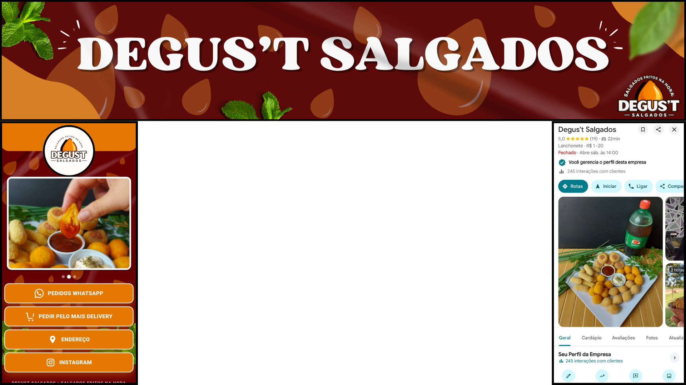

TAG DO SERVIÇO
DEGUS'T SALGADOS
Otimizei o WhatsApp, Google e Instagram, criando novos conteúdos e desenvolvendo uma landing page profissional para fortalecer a presença digital e aumentar a captação de clientes.

Identidade visual, sites e sistemas feitos sob medida pra negócios locais.

Otimizei o WhatsApp, Google e Instagram, criando novos conteúdos e desenvolvendo uma landing page profissional para fortalecer a presença digital e aumentar a captação de clientes.

Seja o próximo a ganhar mais clientes

Seja o próximo a ganhar mais clientes
É só chamar — respondemos rápido.